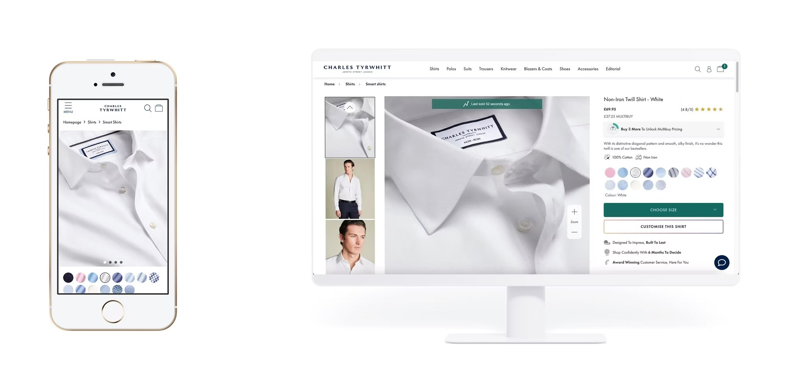
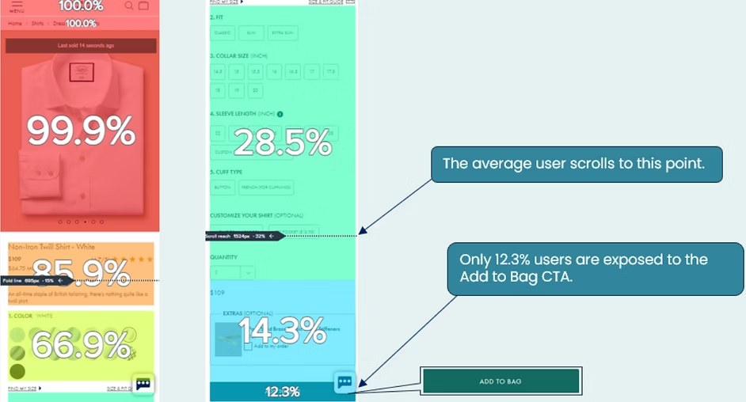
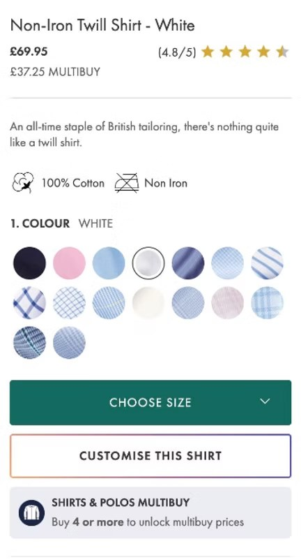
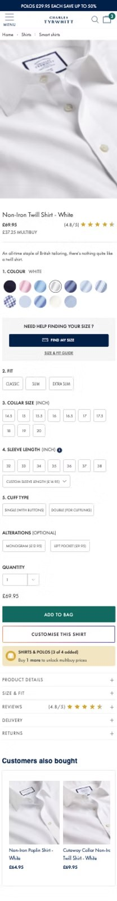
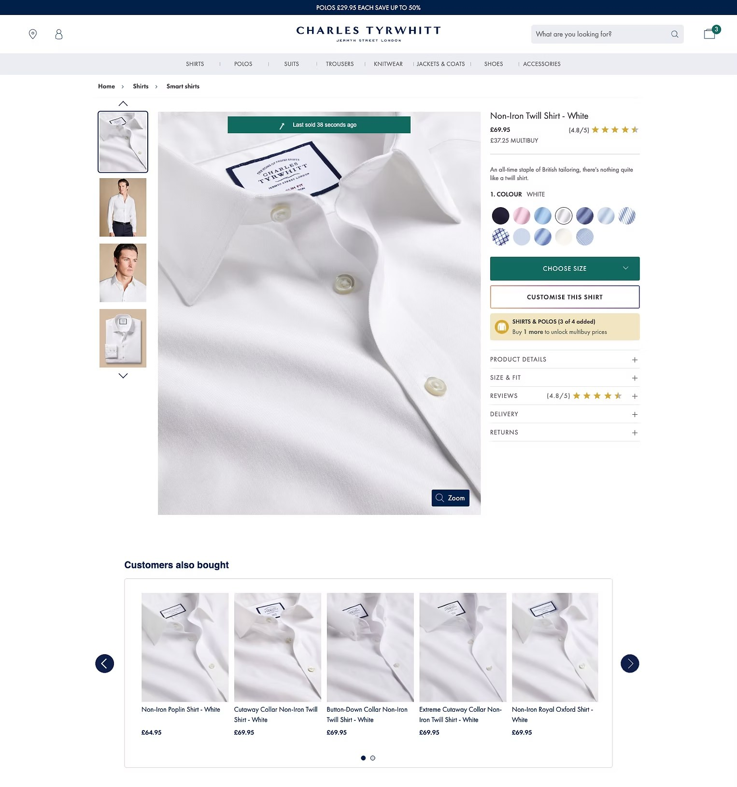

A year-long UX overhaul that lifted revenue by £9.8K in 2 weeks

"This project taught me that well-researched test variants are key to unlocking value on high-traffic pages."
Over the course of a year, I led the redesign of Charles Tyrwhitt's Product Detail Page — the site's main revenue driver.
The work involved two rounds of usability testing followed by two phases of A/B testing. One of the key takeaways from this project was the importance of validating ideas early, especially when working on high-impact pages. Without that, A/B testing can become time-consuming and expensive without delivering real insight.
The existing PDP had clear UX issues:

Contentsquare analysis revealed that the average user scrolled to only 28.5% of the page — with only 12.3% ever seeing the Add to Bag CTA.
We gathered insight through:
These insights shaped the first redesign iteration and helped identify friction points early.


Before: Add to Bag buried below multiple size selectors. After: linear layout with persistent swatches and CTA visible much earlier in the scroll.
The initial layout included a progressive disclosure model for size selection. After observing usability issues and increased error rates, we designed three A/B test variants to evaluate alternative UX patterns:
All designs were tested across mobile and desktop.

The final winning variant — clearer hierarchy, persistent swatches, and the Add to Bag surfaced at the right moment in the journey.
| Metric | Mobile | Desktop |
|---|---|---|
| Success Rate | 88% | 88% |
| Average Task Completion Time | 12.21s | 14.89s |
| Ease of Use Rating | 4.33 / 5 | 4.58 / 5 |
| Satisfaction Rating | 4.25 / 5 | 4.44 / 5 |
The PDP redesign resulted in a measurable uplift in revenue and engagement, and the winning variant has been implemented as the new control across the site. Key improvements included clearer hierarchy, simplified size selection, and better visibility of critical actions.
The project also provided a scalable template for future PDP optimisations and set a precedent for combining qualitative and quantitative research to guide design decisions.